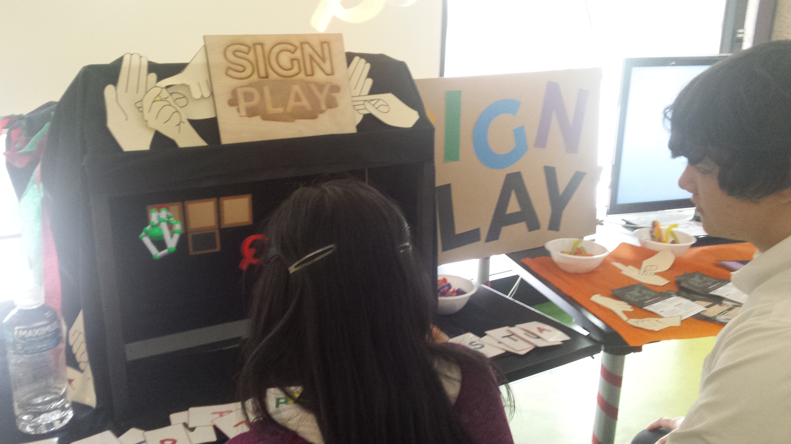
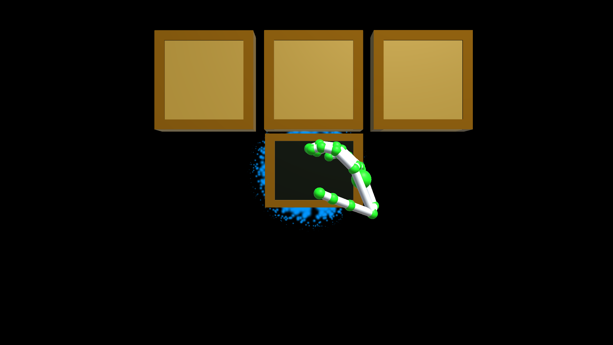
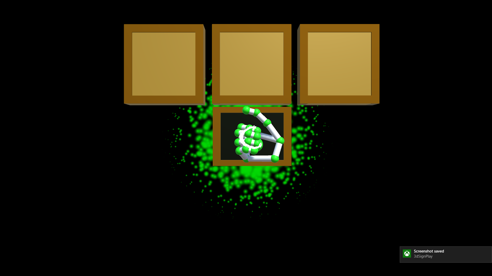
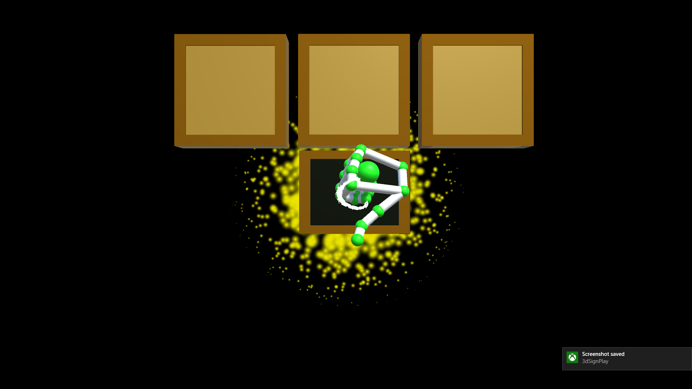

As part of physical computer and interaction design course at UQ, we were tasked to create a project to be put on exhibit at the end of semester. This project was created over a 12 week period, starting from initial concept creation and group formation to the final exhibit. Myself along with three other team members worked together to create ‘SignPlay’ an interactive system to teach young children sign language that made use of the Leap Motion and Unity Engine. The following portfolio is a description of some of the processes and design that went into creating the final product.
To access our video describing the project, my weekly blogs detailing some of the week to week trials and tribulations we had or to read my report on how 'SignPlay' holds up as as a gesture only interface. Please see the links in the footer.
Team photo from the Exhibit. Pictured Left to Right, John, Isaac, Ailsa, Celeste
Isaac Hill
Software Designer. Programmer. Fearless Leader. I’ve had experience with languages such as python, Java, C, PHP, C# and JavaScript. I was the project leader and one of progr
ammers on the SignPlay Project. The initial concept was brought forth by myself and have really enjoyed working on this project.
The Team
The rest of the team is made up of John Kent, Celeste Than and Ailsa Short (pictured above). John was a programmer like myself and spent long hours within me working on the project at random hours of the day and night. Celeste and Ailsa were UX designers
They helped us create all the cool designs as well as help create the 3D models and video.
SignPlay
Created with the intent to help foster the learning of sign language for young children. Designed such that all interactions are done with hand actions that aim to be intuitive and easy to understand. Users of ‘SignPlay’ create fun three letterwords that create. small cute animals that can be knocked about. After successfully spelling a few words, many animals will spawn at once; this acts as a reward for users, encouraging them to continue to spell words. Aimed at young children from year one to three, ‘SignPlay’ will allow them to learn basic sign language while also having fun.

Sign Play in use at the Edge
The Sign Language used is basic finger spelling from the Australian Sign Language (AUSLAN) sign bank. It only covers the alphabet and does not include any words.
Designed to help foster communication and bilingual skills to young children by making these early learning stages more fun than conventional study. ‘SignPlay’ uses the Leap Motion as its way of interfacing with people’s hands. The system itself was built using the Unity Engine.
The ideal location for ‘SignPlay’ would be at any sort of day care centre, where kids are free to explore as they wish, within a confined space under supervision. Because ‘SignPlay’ is designed for single person interaction, it can be difficult for multiple children to interact with it simultaneously, as such the leap motion is designed for one on one interactions and may not be suited for conventional classrooms.
To create a more realistic effect and feel, we made use of the Pepper’s ghost effect. This gave the appearance that the 3D space being displayed on screen was floating within the system itself.
Initial concept
The concept was to try and create a tool that would allow children to learn sign language so that students can communicate with the hearing impaired, fostering a greater sense of community and removing communication barriers between children.
Personal Contributions
The initial pitch was my idea. During the initial period of the course we were given a wide range of topics through which to frame our problem spaces; these spaces included human ageing, big data, Internet of Things, and early learning.
At the beginning of this semester, I had an idea of some hardware I was interested in using, such as the Leap Motion as well as the Pepper’s ghost effect So when looking at the problem spaces I had this thought in the back of my head. After some deliberation with other students etc. I eventually came to the idea of working with sign language. I felt this was a worthwhile topic to propose because I knew that if we were able to create it exactly according to the initial proposal it would have a very real-world, practical effect, which was very important to me in what ever project I would work on.
Hand Detection
After initial conception and a chance to look at the leap motion, it was decided that the project would be scaled back to include only the alphabet, as this was simpler and the majority of the letters were static. After we made this decision the next major problem that needed to be solved was figuring out a way to compare and differentiate hands. Initially we were able to get a system up and running, but as we added more signs we found it lacking and it was having trouble distinguishing certain hand signs. After looking deeper into the code we found a few large errors and made some adjustments to how the comparison code functioned. This allowed us to get a better comparison system working.
Personal Contributions
All of the programming for ‘SignPlay’ was done by myself or John, with the majority of it being done together using over the shoulder coding techniques. This ensured that any errors we may have missed would be caught by the other person. This approach proved to work well, as the majority of sections that we had errors with were sections that we wrote independently and then refactored into the system.
Being both Software Design majors John and I were more then happy to work on the programming side of the the project. Lots of time was spent together on white boards working out how systems would be built. When we started John first set up getting the initial Leap Motion set up. After this we began work on figuring out how the system would operate. First we created a class system that was able to represent a single gesture, which we would then compare current hand locations against to see if it was close. I created the very simple storage system which made use of a JSON file, in which all the captured gestures could be stored and loaded.
UI
Solving this issue allowed us to consider ways to have users interact with ‘SignPlay’. We decided that to try and keep in theme with communication with Sign Language as well as to get the most of the Leap Motion we would only allow interaction with hand movements. Much discussion happened about how we would make this interaction worked before we finally settled on a way to do this. While ‘SignPlay’ at the exhibit was not entirely intuitive and required a brief explanation from one of our team members, it was intuitive enough that after a short time watching it being used most users were able to pick up how it worked. Part of the way we tried to make this easier was adding coloured effects to give feedback to what the users were seeing.



the blue coloured particle effect will be created when capture is occuring. Green indicated you are happy with the letter being presented. Yellow means you don't want this one and want another letter to appear
Personal Contribution
The design decisions that were made were informed quite a bit from the user testing experiences we had, as well as trying to match a theme that embodied a classroom feel. With the creation of the UI, because we decided that no input besides gestures from your hands would be taken, that narrowed the kind of interactions we could have to a large extent. Because of this limited space we thought it was very important that users be able to create letters and move letters, without accidentally doing anything else at the same time. While this was discussed by John and I we eventually decided on the chalk board, this being the only area of space that a user can input signs. We also decided to make it as long as someone’s hands are within the X and Y bounds, to try and avoid confusion. John and I created a state diagram to try and figure out how users would move through the system. We gave each of these states a different colour that would be displayed in the system so users would be able to connect a colour to what they are doing.
// images here.
Testing
During the development of ‘SignPlay’ we had two main opportunities to test; the first chance we had to test was at Sheldon College. This was a very early stage of the prototype and was more about showing off the proof of concept and using the pyramid. This did however give us a very good gauge early on about what exactly kids were interested in. We realized that the hologram effect and spelling letters with your hands would not be enough to engage and interest kids and instead some form of ‘physical’ object that represented letters was needed - this led us to making each letter a 3D object when signed correctly.
The second set of testing we were able to do was far closer to the exhibit date. This mostly tested how kids were able to interact with the system, such as picking up letters and placing them. As we had spent so much time with the system developing it we had not realized how difficult other users were finding it to pick up and move around letters. This lead to us making it easier to pick up letters, as well as adding multiple hand support.
Personal Contribution
I was present only for the initial set of user testing. John and I were allowed to visit Sheldon College for a day, where we were able to engage and help run a class of young students and then afterwards were able to have them use our prototype. When we allowed students to use this prototype it was very basic, and the kids were not very excited about using the system or making hand signs; this is what lead us to creating all the 3D object animals and letters, to create a more engaging experience. I felt that while the main purpose of the entire interaction and experience was the sign language, making that seem like a secondary part to the main function, would help keep kids entertained while they passively learnt about finger spelling.
Instructions for use
Using ‘SignPlay’ is easy. Users are given a series of cards that allow them to identify a certain hand Sign. After they know the hand sign they can enter it in the system by placing their hands within the “chalk board” in the pyramid. After three seconds of being within the pyramid, a letter that the system thinks is the users hand sign will appear, and after this the user can give a thumbs up to say it’s the correct letter. If the user gives a thumbs down it will cycle to the next most likely letter, and will show a total of 3 letters if the user continues to thumb down - after this the whole process will reset. On a successful letter that letter will spawn as a 3D object the user can grab and move around: moving one of these letters into the three floating frames about the “chalk board” will make the letter stay there. Once a letter has been placed into each of the frames all the letters and any additional letters on the screen will drop away. If the letters in a frame spelled a correct word, then after all the letters have fallen a cute round chubby animal that the user can play with will appear. After 3 words are successfully spelled a large bunch of animals are all spawned at once, to provide a big reward for users.
// show with images. To help with the interactions coloured particle effects are used
Reflections on project
Throughout this course I have learnt a lot about running a project without a client or premade spec. I have worked on other projects but these have always had a client or someone who ideas must be run past. This was the first project in which there was no one person we had to answer to. I found this came with its own drawbacks and benefits. One of the obvious benefits is not having to answer to someone, and being able to make design decisions you believe work best; however, an unforeseen issue with this can be the hesitation that comes with it. It is very easy to simply build something and say “that’s what the client wants, I’m just building it” but having to claim these yourself can lead to over-deliberation amongst your team. Another issue is losing sight of the final goal. It is easy to lose track of what you set to be your end product when you have the freedom to add or remove things as you want. However this is all outweighed by the feeling of having a product you made entirely, from the initial design to final completion.
Reflections on leadership
Another aspect to reflect on during this semester is leadership. I became the de facto project leader, because the initial concept was mine. While I have no issues as acting as a team leader I felt as though I did not perform as well as I could have in this role. Some things I learnt were that in future projects if I were to take on a leadership position I would try to implement strategies such as, delegating and assigning everyone work; while I was busy with the programming side along with John I would neglect to give tasks for other group members to achieve. Another skill is to ensure you know how everyone is going with their current work. It is easy for people to let things sit unless they are being constantly reminded. Regardless of their actual work effort, unless constant reminders are had people can easily become complacent.